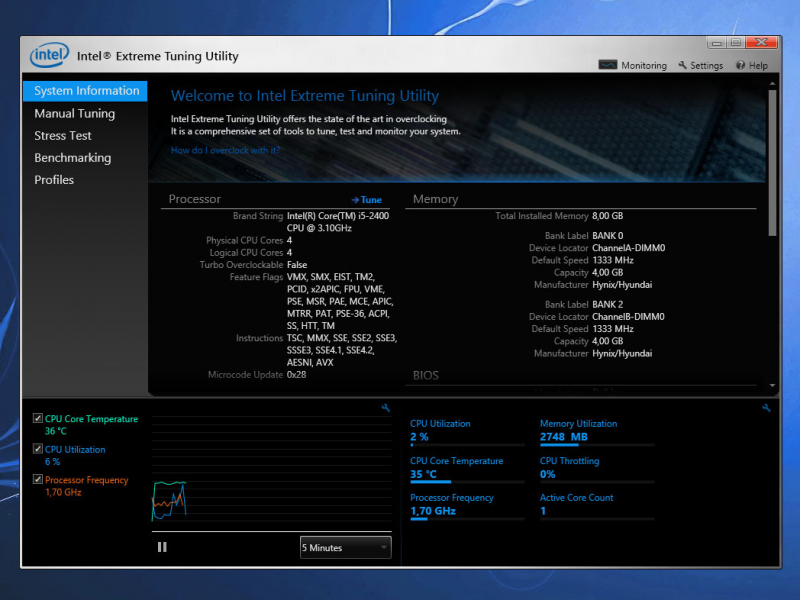

Intel Extreme Tuning Utility (XTU)
Intel Extreme Tuning Utility (XTU) is a powerful tool designed for advanced processor and system tuning.
XTU provides access to CPU frequency, voltage, and memory timing controls, as well as other system parameters.
Newer versions of XTU lack support for LGA 2011-3 and earlier processors, however, version 6.5.2.40 is still functional and supports these CPUs.
